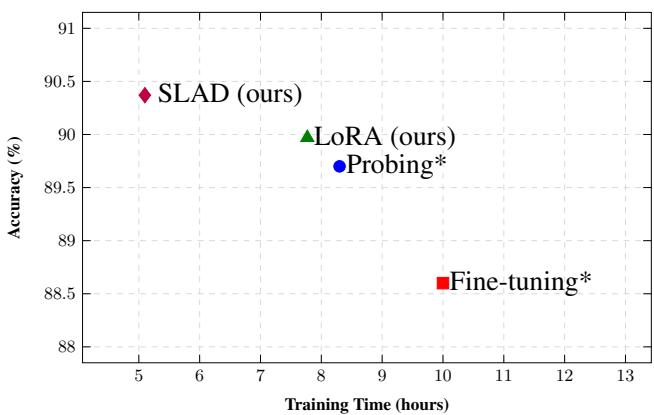
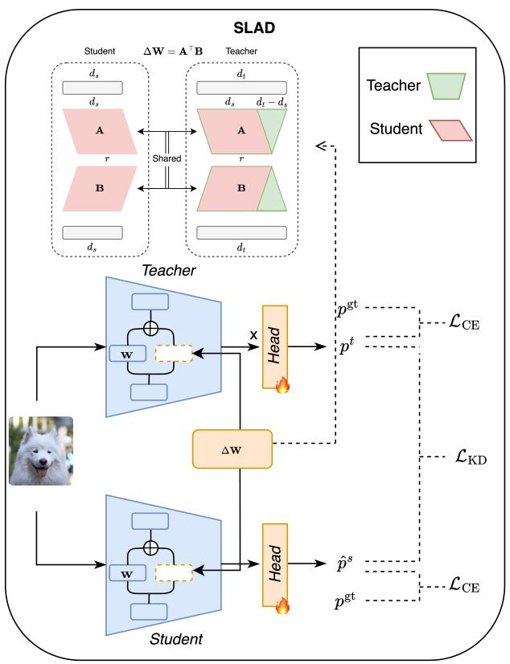

CVPR Findings 2026 · P1 · 2026-05-31
SLAD：通用视觉自监督常用大 backbone 作为 teacher，这篇对“如何不破坏 teacher 表征空间再蒸馏给小模型”有直接方法价值
把任务蒸馏中的性能损失归因到 teacher fine-tuning 后的表征错位，并给出参数共享 adapter 的低成本修正。
编号2605.29726
优先级P1
类别CVPR Findings 2026
会议arXiv + CVPR Findings 2026
方法先用 LoRA 保留大/小 foundation model 的特征几何，再在 teacher 与 student 之间共享 adapter 做联合训练。
来源arXiv / OpenReview
先说结论。通用视觉自监督常用大 backbone 作为 teacher，这篇对“如何不破坏 teacher 表征空间再蒸馏给小模型”有直接方法价值。 把任务蒸馏中的性能损失归因到 teacher fine-tuning 后的表征错位，并给出参数共享 adapter 的低成本修正。


核心问题
通用视觉自监督常用大 backbone 作为 teacher，这篇对“如何不破坏 teacher 表征空间再蒸馏给小模型”有直接方法价值。
方法拆解
先用 LoRA 保留大/小 foundation model 的特征几何，再在 teacher 与 student 之间共享 adapter 做联合训练。
主要贡献
把任务蒸馏中的性能损失归因到 teacher fine-tuning 后的表征错位，并给出参数共享 adapter 的低成本修正。
实验看点
摘要报告 student 与 teacher 均有提升，重点证据是 feature alignment 改善后知识迁移更稳定。
局限与读法
仍是 downstream task-specific distillation，不是从无标签图像大规模预训练新范式；需要看正文确认视觉任务覆盖面。